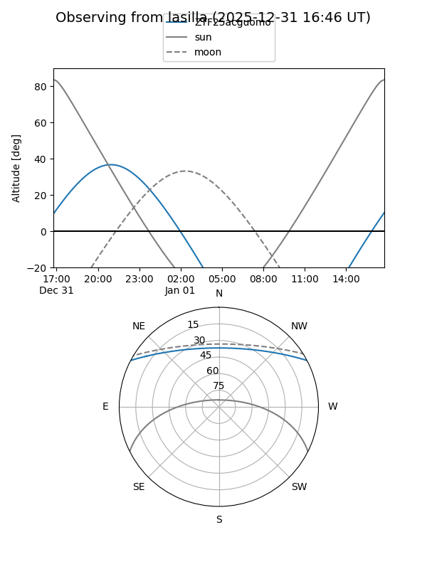
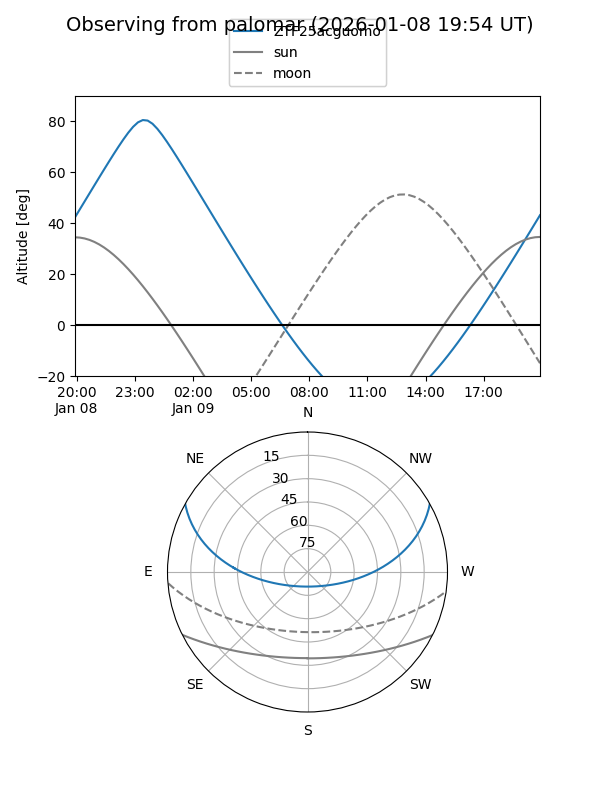

ZTF25acguomo
Target ZTF25acguomo at 2026-01-09 12:49
Aliases and brokers:
FINK: link
Lasair: link
ALeRCE: link
alt names
ZTF25acguomo (ztf,fink_ztf)
Coordinates:
equatorial (ra, dec) = 343.6392,+23.82529
equatorial (HMS+DMS) = 22:54:33.40,+23:49:31.05
galactic (l, b) = (91.2497,-31.75915)
Flags:
Photometry:
last ztfg=19.56
3 ztfg detections
Lightcurve

Visibility


Additional plots